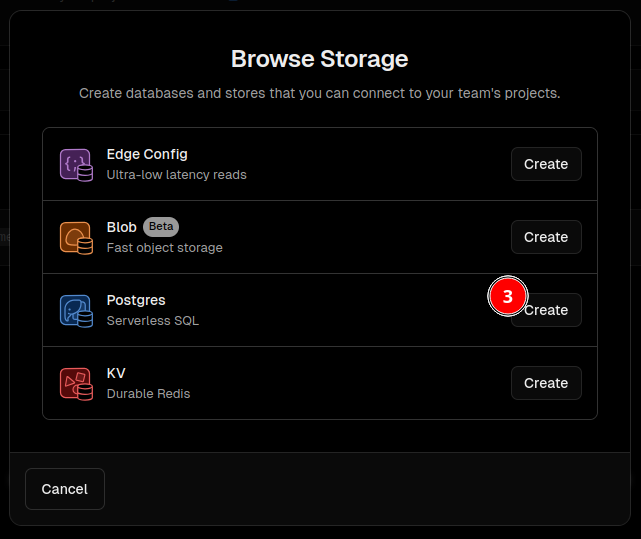

# 佈署 Waline server 端
參考 Waline 佈署教學網站 https://waline.js.org/guide/deploy/vercel.html ，點選 Deploy 按鈕，會跳轉 Vercel 頁面建立 Waline server。
如果使用該方式，在 Vercel 出現下面錯誤訊息，改用這個 [Deploy] 試試
Error: No Output Directory named "dist" found after the Build completed. You can configure the Output Directory in your Project Settings.
除了 Vercel 作為 Waline 服務之外，也有其他選擇 https://waline.js.org/guide/get-started/server.html
# 建立 Waline 使用的資料庫
Waline 需要資料庫儲存留言資料，Waline 支援多種資料庫 https://waline.js.org/guide/database.html 。
Vercel 也有提供資料庫，所以這邊使用 Vercel 內建的資料庫服務，建立 PostgreSQL。

# 將 Waline 服務與資料庫連接
進入 App
連接剛剛建立的 PostgreSQL
# 設定 Waline 環境變數
如果資料庫連接成功，會看到紅框內的環境變數。
但這樣還無法讓 Waline server 成功連接資料庫，還需要設定下面的環境變數
- PG_SSL
- 設為 true
- PG_PORT
- 設為 5432
Waline 可設定的 PostgreSQL 環境變數
https://waline.js.org/guide/database.html#postgresql
# 測試 Waline 功能
進入 Waline project 查看 Waline 留言頁面。
如果正常的話會看到如下畫面，可以留言測試看看是否成功。
# 設定 ShokaX
修改 Hexo ShokaX 設定檔；Hexo 資料夾 /_config.shokax.yml 或 /_config.shokaX.yml
增加下面設定
waline: | |
enable: true # 啟用狀態 | |
serverURL: "https://waline-three-wine.vercel.app" # Waline server 網址，從 Vercel Project 查看 domain | |
lang: "zh-TW" # comment 界面語言 | |
meta: # comment 可填寫項目 | |
- nick | |
- mail | |
requiredMeta: # comment 必填項目 | |
- nick | |
- mail | |
wordLimit: 400 # comment 字數上限 | |
pageSize: 10 # 每頁顯示筆數 |
Hexo ShokaX 的 Waline 其他設定項目
https://docs.kaitaku.xyz/guide/comment.html#valine - 系评论系统
# 使用紀錄
# 2024/06
- meta 設定無效，只設定 nick, mail 但是界面上還是會顯示網址欄位
最新評論顯示 emoji 無效，會變成 HTML